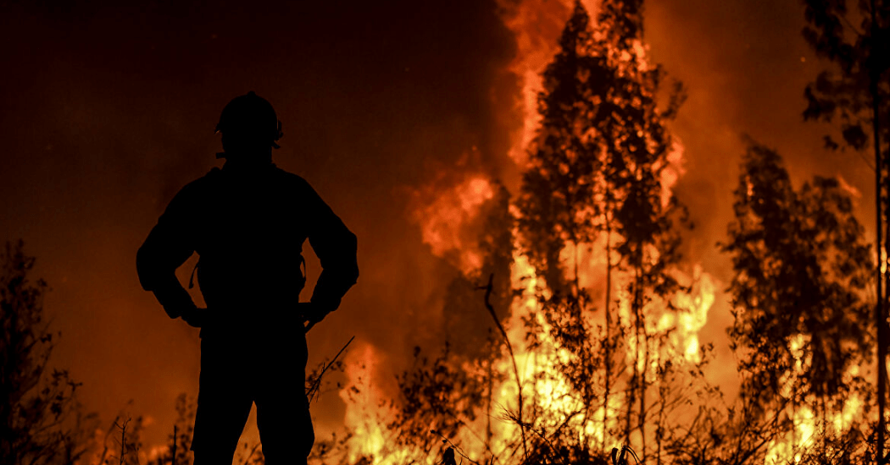
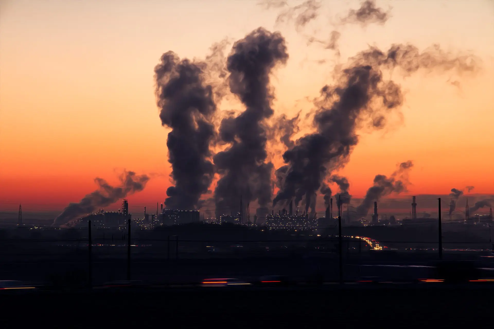
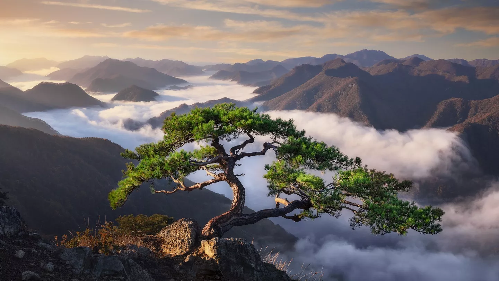
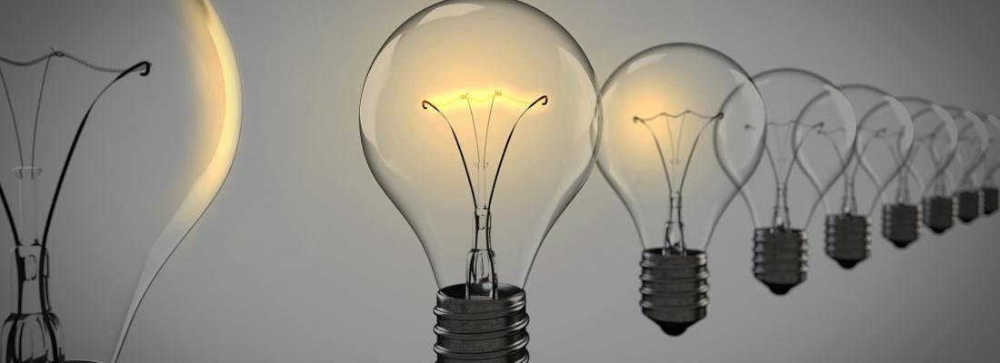
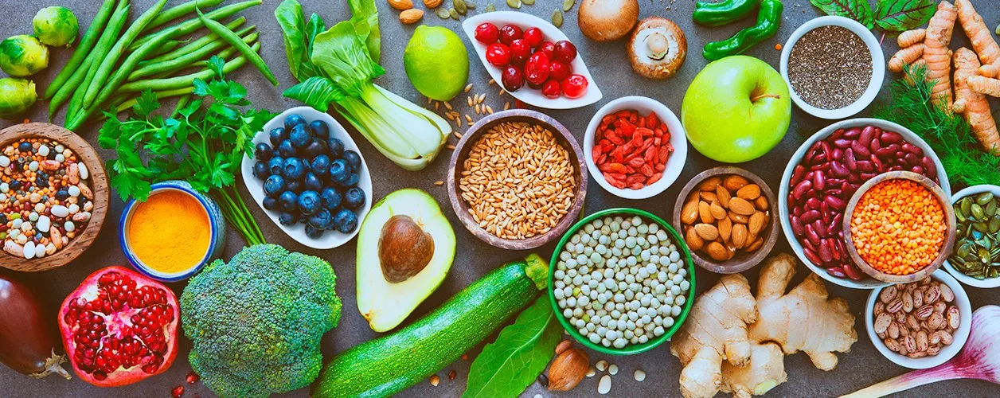
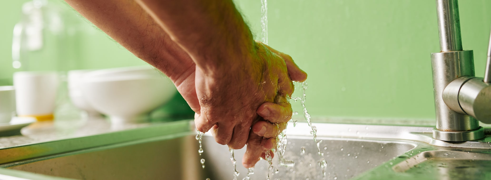
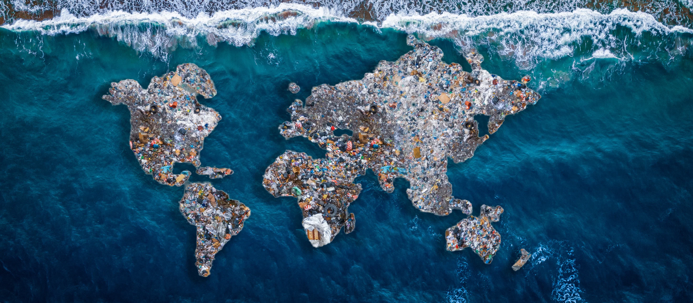

As mudanças climáticas
Mudanças climáticas como o próprio termo indica, referem-se a mudanças no clima que estão ocorrendo em todo o planeta e que apresentam efeitos que já podem ser vistos em várias de suas partes. Extinção de várias espécies, derretimento das geleiras e aumento do nível do mar são apenas algumas das consequências desencadeadas pelo aumento do aquecimento global.

Mas, o que é aquecimento global?
aquecimento global nada mais é do que uma intensificação do chamado efeito estufa. Esse efeito é um fenômeno natural e importante para a Terra, pois permite que o planeta fique aquecido, entretanto, a sua intensificação é prejudicial. O efeito estufa acontece, pois na atmosfera há a presença de gases, chamados de gases de efeito estufa, que garantem que parte do calor que chega ao planeta fique retido. O aumento desses gases leva a uma maior retenção de calor e, portanto, ao aumento da temperatura. Quando falamos em aquecimento global estamos referindo-nos a um aumento anormal da temperatura média do nosso planeta. Para ter-se uma ideia, a temperatura média global de superfície aumentou aproximadamente 0,74 ºC nos últimos 100 anos, e pesquisas indicam que esse aumento está muito relacionado à ação do ser humano, que, ao longo dos anos, aumentou suas emissões de gases do efeito estufa, como o gás carbônico.
Quais são as causas do aquecimento global?
O aquecimento global envolve um conjunto de fenômenos que, no geral, causam o aumento da temperatura no planeta Terra. Nessa lógica, esse aumento exacerbado da temperatura global está atrelado aos impactos ambientais gerados especificamente pela ação humana, que transforma cada vez mais o ambiente natural.
Assim, o aquecimento global envolve causas antrópicas, ou seja, que são causadas pela ação do ser humano. Alguns exemplos de ações humanas que contribuem para o aumento das temperaturas do nosso planeta:
registro de queimadas;
aumento do desmatamento;
emissão de poluentes; etc...

A seguir, veremos algumas formas de ajudarmos nosso planeta:

Economize energia
Trocando as lâmpadas por modelos eficientes — se cada casa nos Estados Unidos fizesse isso, por exemplo, o país reduziria o mesmo nível de poluição que se tirasse 1 milhão de carros das estradas. Em seguida, preste atenção para não deixar luzes acesas em cômodos que não estão sendo utilizados e desligue o computador durante a noite. Nas tarefas domésticas, busque ser mais eficiente, por exemplo, esperando acumular roupas o suficiente para encher uma máquina antes de lavá-las.

Papel
Impressões desnecessárias: ingressos (quando há a opção de e-ticket), extratos de banco, via da compra no cartão, contas que podem ser pagas online… Nada disso precisa ser impresso. Ao usar papel para anotações, certifique-se de usá-lo por completo antes de reciclar. E, na hora de dar presentes, experimente reutilizar papéis antigos ou buscar novas formas criativas de embrulhá-los.
Um dia vegetariano
Não precisa parar de comer carne, mas experimente deixar de consumir carne por somente um dia. São necessários 9,5 mil litros de água para produzir cada meio quilo de carne, e cada hambúrguer que vem de animais que pastam em áreas desmatadas causou a destruição de cinco metros quadrados de floresta.

A torneira
Ao desligar a torneira ao escovar os dentes, por exemplo, é possível economizar 18 litros de água por dia. Experimente fazer o mesmo quando for ensaboar as mãos ou as louças na pia na hora de lavá-las para economizar ainda mais.

Consumo de plástico
Já deve ter ouvido falar da ilha de plástico no Pacífico. Ela é formada por 4 milhões de toneladas de plástico e tem quase duas vezes o tamanho do estado de São Paulo. Reduzir o consumo de plástico no dia a dia é fundamental para reverter este cenário. Muitas cidades brasileiras já aboliram a sacola plástica no supermercado ou passaram a cobrar por ela para tentar limitar o consumo. Se não for o caso da sua, experimente levar as próprias sacolas ou uma mochila para colocar as compras. Tenha também a própria garrafinha para quando precisar tomar água: cerca de 90% das garrafas de plástico não são recicladas e acabam em aterros.
E, se for usar copos plásticos em festas, tente lembrar qual é o seu ou adote a técnica de marcar o nome com uma caneta em vez de jogá-lo no lixo cada vez que for tomar algo.

Conclusão
Bom, portanto se não tivermos consciência de que nossos atos refletem diretamente ao ambiente em que vivemos, em breve não teremos mais um planeta para chamar de lar.
Alguns hábitos diários podem ser repensados, sem prejudicar ou dificultar a sua vida. O pouco de cada um, quando somado, pode ser a solução para salvar a natureza. Faça a sua parte, ajude na preservação do meio ambiente. A vida agradece!